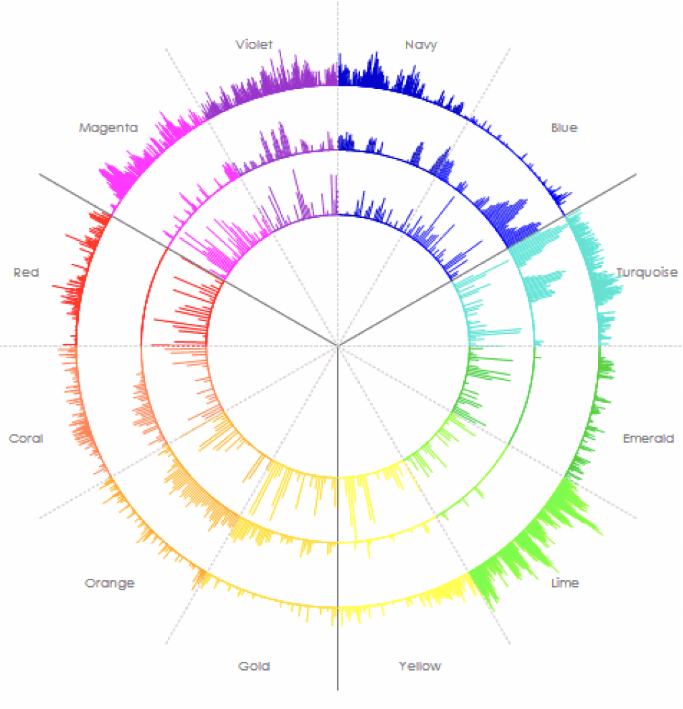

しんどいですよね。
…頑張ってきた。違和感も、焦りも、ずっと感じてきた。
その感覚こそが、次に進む力になることがあります。
私は、救急救命士（国家資格）として20年以上、生死の現場で2,000名以上と向き合ってきました。
今はその経験をもとに、特許技術による声紋分析を用いて、たった6秒の声から本音を可視化し、その人が持つ本来の力を取り戻しながら、ずっと求めていた人生を掴むサポートをしています。
言葉は取り繕えても、声の周波数だけは、本音を隠せません。

専用の診断システムが、声から、科学的に才能を発見します。
声紋分析コーチ 若林寛紀
なぜ、同じ場所に留まり続けてしまうのか。その答えが、声の中にあります。
「やっと、自分の方向が見えた」そう感じるきっかけを、このLINEで届けています。
登録は30秒です。
無料 公式LINE 友だち追加「評価されても、心がモヤモヤする」
「この道でいいのか…正解がわからない」
「何年も同じ場所で足踏みしている気がする」
「周りの期待に応え続けて、息が詰まりそうだ」
「肩書きを外したら、何も残らない気がする」
「やりたいことが、もう自分でもわからない」
「変わりたいのに、何から始めればいいかわからない」
「学んでも学んでも、現実は何も変わっていない」
「一瞬だけ変われた気がして、また元に戻る」
「正解なんてない。動くしかない。わかってるのに動けない」
「言い訳だけが、どんどん上手くなっていく」
「こんな自分が、一番嫌いだ」
人の心には、自分でも気づいていない層があります。
今、意識していること。習慣やクセとして染みついていること。そして、自分でも言葉にできない、本質の部分。
声紋分析は、専用の診断システムで声の周波数を解析し、この3層の状態を12色のカラーバランスとして可視化します。
心を階層別に視覚化する技術は、世界初とされています。
この技術を確立したのは、物理学者・心理学者である柊木匠氏です。声の周波数を色分けする特許技術をベースに、2万人以上の統計データから体系化されたもので、企業・病院・大学など約200の組織に導入されています。
感覚や主観ではなく、構造として自分を理解できるのが、この技術の強みです。
多くの人は、「持っていないもの」を伸ばそうとして苦しくなるか、「持っているもの」を抑え込んで苦しくなっています。
周りの目、評価、期待。それに応えようとして、本来の自分を見失っている方がとても多いです。
でも、ご本人は気づいていません。言葉にできない苦しさだけを感じています。
声紋分析は、その「見えない苦しさ」の正体を、データとして目の前に出してくれます。
ポイントは、「機械が出すデータ」であることです。人間に「あなたはこういう人です」と言われると、どうしても抵抗が生まれます。
たとえ本当のことでも、受け入れにくい。でも、感情のない客観的なデータなら、「そうかもしれない」と素直に見つめることができます。
これが、行動の変化につながる第一歩になります。
さらに、声紋分析は一度やって終わりではありません。定点観測として、その都度、現在地を確認できます。声は嘘をつけません。
言葉では「大丈夫です」と言っていても、声の周波数は、本当の状態を映し出します。
行き詰まっていることも、立ち直ってきたことも、声がすべて教えてくれます。
だから、軌道修正が早いのです。これが、声紋分析を使う理由です。
カリフォルニア大学の研究より
人間の声には、「言葉を作る回路」と「感情を反映する回路」があります。言葉では取り繕えても、声には無意識の本音が現れるとされています。
声の周波数に関する複数の研究より
ストレスや不安を感じると、声の周波数が変化する傾向があります。この知見は、心理状態の客観的な把握に活用され始めています。
※上記は声と心理状態の関係に関する学術的知見であり、特定のサービスの効果を保証するものではありません。
声紋分析で、自分の現在地がわかります。「本来の素質」と「今の状態」のズレが見えます。
でも、それだけでは変われません。「で、どうすればいいの？」が残るからです。
人が変われない理由は、大きく2つあります。ひとつは、自分を客観視することの難しさです。自分の表情、声のトーン、口癖、行動パターン。無意識にやっていることが多すぎて、自分では気づけません。
もうひとつは、無意識の「心のクセ」です。
「本音を言うと、受け入れられない」
「失敗したら、すべてが終わる」
「期待に応えないと、自分に価値がない」
これらは、自分を守るために作られたものです。でも、いつの間にか、可能性を狭める足かせになっています。
行動だけを変えようとしても、根本にある「ものの捉え方」が変わらなければ、結局、元のパターンに戻ってしまいます。
だから、人間の介入が必要になります。
声紋分析で現在地を把握し、対話の中で「本当はどうしたいのか」を一緒に探っていきます。
言葉だけでなく、声のトーン、表情、間。非言語の情報をリアルタイムで読み取りながら、ご本人も気づいていない思考のパターンに光を当てます。
これは、機械にはできません。人間だからできることです。
そして、もうひとつ大切なことがあります。
一人で変わろうとしても、人間の「現状維持の力」はとても強いです。
心が折れそうになったとき、「あなたならできます」と信じ続ける存在がいること。これが、もう一歩を踏ん張る力になります。
なぜ、同じ場所に留まり続けてしまうのか。その答えが、声の中にあります。
「やっと、自分の方向が見えた」そう感じるきっかけを、このLINEで届けています。
登録は30秒です。
無料 公式LINE 友だち追加※無料で情報発信中です！